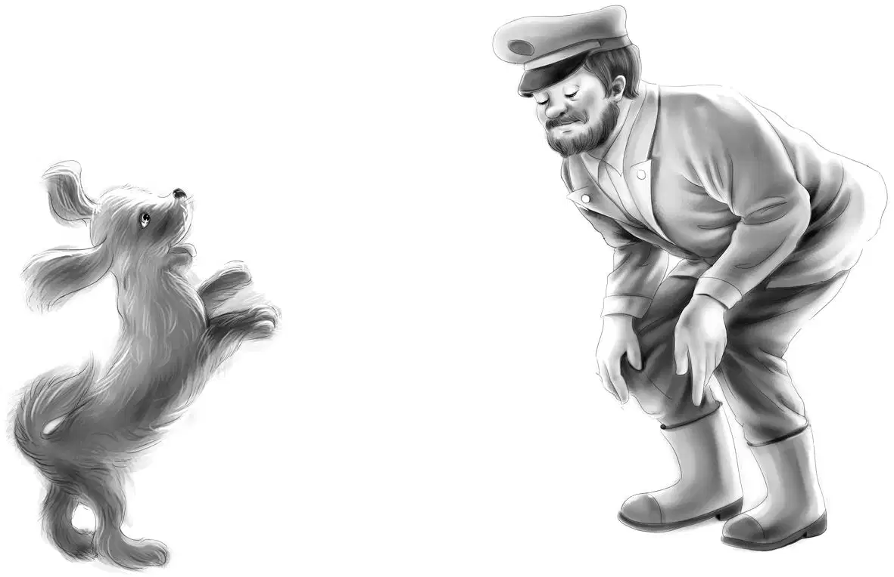
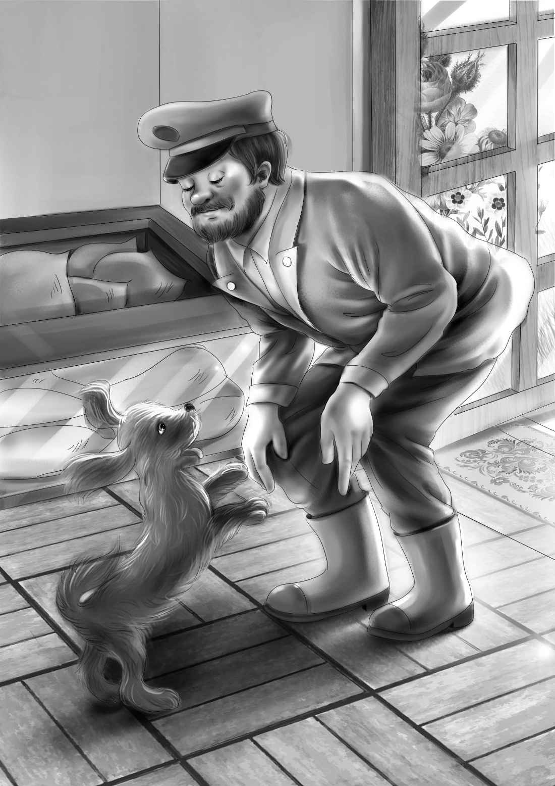

Who Needs a Friend？

好在奥登一家的笨瓜并没有当多久。
一到星期二，班尼便急切地提议道：“咱们快去找找白雪船长的家吧！”
“那得去杂货店找。”亨利笑着说。
其他人也笑了起来。
杰西说：“等一会儿！我们先把早餐的盘子洗完再走。”
爷爷问豪尔先生：“您知道‘塔希提号’的白雪船长么？”
“何止是知道，简直是太了解啦！”豪尔说，“他还是小孩子的时候我就认识他了。他是库克小子的舅舅。”
“原来是这样！”杰西说。
“啊哈！”班尼恍然大悟地点了点头，“这下可就清楚多了！”
豪尔先生靠着柜台说：“‘塔希提号’每次靠岸时，拉里都会去看望他舅舅。他舅舅总会带些东西给他，不过没人知道究竟是什么东西。”
“它们多半是装在带盖的桶里。”班尼看着豪尔先生一本正经地说。
“小家伙，你是怎么知道的？”豪尔先生惊讶地看着班尼。
“有天深夜，我看到很晚回家的拉里手里拎着个桶。”班尼说。
“他舅舅给他的有时是个盒子，有时是个玻璃瓶，”豪尔先生继续说，“至于那些容器里面装的究竟是什么，谁知道呢？”
亨利说：“我们知道，应该是海草或者浮游生物。”
“浮游生物是什么，孩子？”豪尔先生疑惑地看着亨利。
“这里是浅海湾，没有浮游生物是很正常的。”维莉说。
“它们只生活在深海里，”亨利补充道，“有的深海海域简直是密布着浮游生物呢！”
“可我还是不清楚那玩意儿究竟是什么。”豪尔先生仍然一脸茫然。
“浮游生物就是海底的小植物、小鱼、鱼卵之类的，它们是鲸鱼的食物，却小到没有显微镜你根本看不见。”班尼连比带划地解释道，“鲸鱼就像这样，喷出一大口水，然后‘哗啦’一口就把浮游生物全吞下去了。”
“浮游生物也是其他鱼类的食物，”亨利加了一句，“就像陆地动物喜欢吃草和小动物一样。”
“人们说深海里的浮游生物多得可以供全世界的动物吃个饱，可就是太难吃啦！”班尼遗憾地说。
“是吗？真可惜，它们要是好吃就好了。”豪尔先生感叹道，转而又想起了一个问题，“可是库克家的那孩子收集浮游生物做什么呢？”
“我们猜他应该是在做研究或试验。”亨利答道。
“他倒是个很聪明的孩子！”豪尔先生说，“说不定白雪船长知道他的想法。”
“白雪船长住在哪里？”亨利问道。
“就在这条街上，”豪尔先生说，“你们知道工人修车道的位置吗？”
“知道，我们就是在那儿买的水泥。”杰西说。
豪尔先生点点头：“白雪船长就住在那个路口的白房子里，和他母亲住一起。”
班尼问道：“大部分时间他都在海上吧？”
“是啊，绝大多数时间都是。”豪尔先生回答。
正在这时，望望突然摇着尾巴向店门口走了过去，迎向一个正在进门的高个子男人。客人向它打了个招呼：“你好啊，小狗狗。你真是只称职的小狗，估计看到坏人准会汪汪叫的。我猜你应该叫望望吧？”说着他拍了拍望望的脑袋。

“它就叫望望！”大家都吃惊不已。
“你就是‘塔希提号’的白雪船长，”班尼兴奋地叫了起来，“我们刚在码头见过你！”
“没错！”白雪船长说，“而你们就是刚参观过‘塔希提号’的奥登家的孩子吧？真是一群可爱的孩子。”他转过头对豪尔先生说，“请给我拿些饼干吧，还有五磅白糖。好啦，现在该回家喽！”
“你急着赶回去吗？”班尼赶紧问道。
“不急不急。我正在休假。”
“那能邀请你到我们的岩石凳那儿小坐一会儿吗？”亨利问，“岩石凳就在那边！”说着他指了指灯塔边上。
“没问题！”白雪船长说，“那我就先把饼干搁在店里，待会儿回家时再拿吧！”他边说边抚摸着望望的脑袋。
“看起来望望很喜欢你。”维莉微笑地看着白雪船长。
“我也很喜欢小狗呢！”白雪船长说。
“咱们现在就走吧！”班尼说，“要知道我们用岩石做了五把椅子和一张桌子呢！”
“那我就坐在桌子上好了。”船长打趣道。
“别，还是亨利坐桌子吧！”杰西说，“他的石凳大小正适合你坐。”
片刻之后，大家就坐在各自的石凳上，开心地聊起天来。
“看到那座小屋子了么？”杰西指了指旁边的白色小屋，“它就是灯塔的夏季小厨房。”
亨利补充道：“小屋现在已经属于库克先生了——也就是拉里的爸爸，豪尔先生说的。”
“我看到了，小屋里好像是空的。”船长说。
“其实不是空的，”班尼一脸认真地说，“据我们所知，拉里经常通宵达旦地在小屋里做试验。可蹊跷的是，他又没有小屋的钥匙，是怎么进去的呢？”
“我还纳闷他平时都是在哪里做研究呢，原来如此！”白雪船长说，“他很少跟我说什么，我只知道他在努力自学。”
“拉里想在今年秋天上大学。”杰西说。
“看来除了他爸爸，镇上所有人都知道了。”船长笑着说，“聪明的拉里已经给两所大学写了入学申请。”
“那两所大学会录取他吗？”班尼急切地问道。
“当然，像这么聪明的学生，两所大学都想要他，”船长回答，“大学里很需要动手能力强的年轻人。”
听到这里，爷爷插了进来：“我觉得他可以进亨利的学校，在完成学业的同时继续他的实验。我去跟学校的老师谈谈。”
“他申请的两所大学都想要他，而他自己选了亚当斯大学。”船长说。
“亚当斯大学？那不就是亨利的学校吗？”班尼禁不住喊道。
“真是无巧不成书！”亨利兴奋地说。
“如果他去了亚当斯大学，你就可以照顾他了，亨利。”班尼说。
亨利笑了：“哈，他可不需要任何人的照料。”
“不过你可以和他交朋友呀！”维莉说。
“你们肯定会成为好朋友的。”白雪船长说，“可惜上大学的事，他爸爸现在还没答应呢！”
“为什么？”班尼不解地问，“还有，拉里为什么只能偷偷地做实验呢？”
白雪船长回答道：“拉里的爸爸汤姆·库克是个专横的人，脾气也很火爆，不过我想他还是爱拉里的。”
“可他并没有表现出自己的爱啊！”班尼说。
“正因为如此，他们父子间才产生了这么多矛盾。”船长说，“我想拉里之所以将一切瞒着爸爸，是担心爸爸知道了会干涉他。”
维莉却不这么认为：“可我们听说，他爸爸很为儿子的高超厨艺自豪。拉里帮镇上做的海鲜大餐所赚的500美元，他爸爸全用去装路灯了！”
白雪船长站了起来：“不管怎样，我会尽力帮助拉里的！我知道他对科学研究非常感兴趣，而且目前看来，他已经完全沉迷进去了。”
亨利沉吟了一会儿，说：“接下来我们的首要任务就是把拉里变成我们的好朋友。”
“那我们要怎么做呢？”杰西问。
维莉说：“自从上次我们帮他做了晚餐以后，他对我们已经友好多了。”
“爷爷，我们该怎么做？”杰西问，“怎样才能让拉里开心起来？”
“明天早晨再说吧，”奥登先生说，“到时候我们肯定会有办法的！”
果然，第二天他们就有头绪了，而且完全出乎所有人的意料。